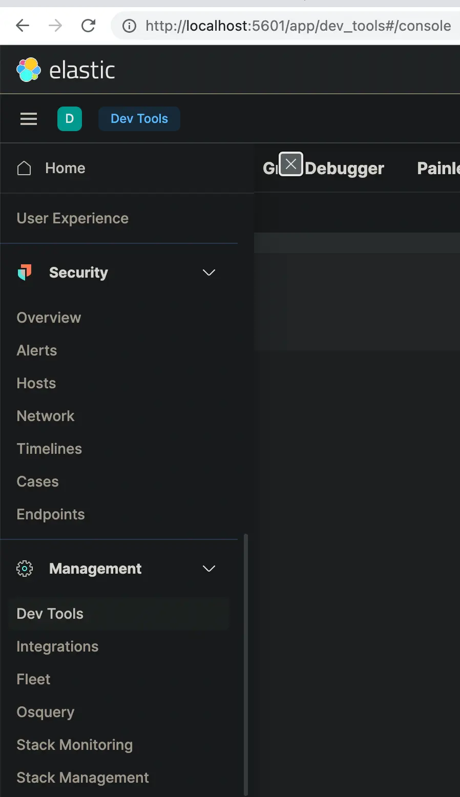
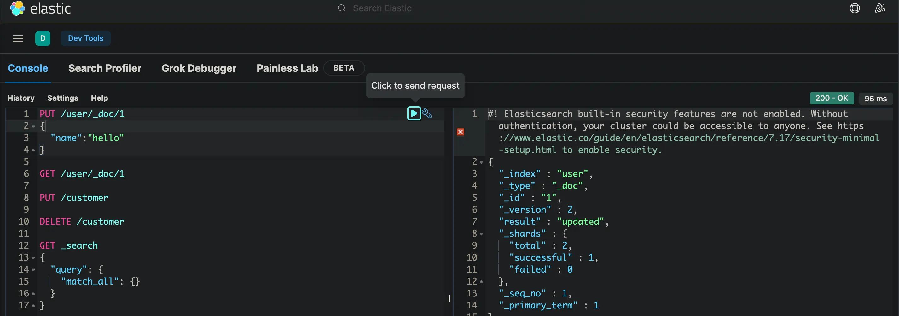

Elasticsearch
官网
轻量场景先看替代品：十万级以内文档、单机部署的全文搜索，Meilisearch/Typesense 的性价比远高于 ES；需要日志分析、聚合报表、Kibana 全家桶或大规模横向扩展，才轮到 Elasticsearch 出场。
docker run --name ms1.0 --restart always -p 9080:7700 -v $(pwd)/meili_data:/meili_data -d getmeili/meilisearch:v1.0安装
-
elasticsearch,基于Lucene(TM)的开源搜索引擎
brew tap elastic/tap brew install elastic/tap/elasticsearch-full brew services start elasticsearch-full curl -X GET http://localhost:9200/ # 查看安装的插件 curl -X GET http://localhost:9200/_cat/pluginsdocker pull docker.elastic.co/elasticsearch/elasticsearch:8.1.3 docker run -p 9200:9200 -p 9300:9300 -e "discovery.type=single-node" docker.elastic.co/elasticsearch/elasticsearch:8.1.3-
名词概念对比
关系数据库 elasticsearch 库 索引 表 类型（8.x 起单索引单类型 _doc，mapping types 已移除，此处保留以对照历史文档）表模式 映射 行 文档 字段 字段 - 支持类型
字段类型 说明 text/keyword字符串：text 全文搜索（分词+相关性打分），keyword 精确匹配、聚合、排序（ES 5.0 起已取代旧 string类型）byte, short, integer, long整数，按取值范围选最小的类型 float, double, half_float浮点 boolean布尔 date, date_nanos日期（毫秒 / 纳秒精度） object, nested对象与嵌套数组（只有 nested 能按数组内对象属性做正确查询） dense_vector向量（kNN / 语义检索，8.x 起） text vs keyword 取舍：这是 ES 新手第一个坑。需要 match 全文搜索与相关性打分 →
text；只需要精确过滤、terms 聚合、排序 →keyword。2026 年的默认写法是用 multi-fields：title配text+title.keyword子字段，两边都要；对不需要分词的字段（状态码、ID、标签数组）直接用keyword省内存与索引开销。
- 支持类型
-
采用倒序存储,关键字 –》[文档1, 文档2, 文档3 ….],所以能快速搜索
-
插入的数据自动地创建类型(type)及其映射(mapping)
-
没有事务一致性,采用乐观版本,文档每更新一次，文档元数据中版本号就增加
-
传统数据库更关注数据一致性，永久存储等,在于操作数据,es则偏重于快速搜索
-
通常用数据库数据初始化es索引
-
索引别名理解及应用
-
默认端口9200
-
查询语法
- Leaf query clauses
-
match,全文搜索,支持text, number, date or boolean
GET /_search { "query": { "match": { "message": "this is a test" } } } -
term,精确相等,不要查询text字段
GET /_search { "query": { "term": { "user.id": { "value": "kimchy", "boost": 1.0 } } } } -
range，范围过滤：数值、日期、IP 区间都支持
GET /_search { "query": { "range": { "age": { "gte": 18, "lte": 35 } } } }
-
-
Compound query clauses，生产环境用得最多的组合容器：bool
GET /_search { "query": { "bool": { "must": [{ "match": { "title": "golang" } }], "filter": [{ "term": { "status": "published" } }, { "range": { "publish_date": { "gte": "2026-01-01" } } }], "must_not": [{ "term": { "author": "spam-bot" } }], "should": [{ "term": { "tags": "grpc" } }] } } }filter 子句不参与相关性打分、可被缓存，能放 filter 的尽量别放 must——这是 ES 最容易拿到手的性能优化。
- Leaf query clauses
-
-
浏览器插件
- es-client-elasticsearch客户端
- Elasticvue-elasticsearch客户端
-
kibana
# 注意和elasticsearch版本配对,否则跑不起来 # 2026 年生产环境：Kibana 与 ES 主版本必须严格一致（9.x 配 9.x）；macOS 按 CPU 选构建（Apple Silicon 用 arm64，Intel 用 x86_64） curl -O https://artifacts.elastic.co/downloads/kibana/kibana-7.17.2-darwin-x86_64.tar.gz curl https://artifacts.elastic.co/downloads/kibana/kibana-7.17.2-darwin-x86_64.tar.gz.sha512 | shasum -a 512 -c - tar -xzf kibana-7.17.2-darwin-x86_64.tar.gz cd kibana-7.17.2-darwin-x86_64/ ./bin/kibana # 浏览器访问 http://localhost:5601/

-
如果报内存不够，先确认是不是监控索引占了空间：
GET _cat/indices/.monitoring-*?v，确认后可删除DELETE .monitoring-*；不需要监控数据时，直接在 elasticsearch.yml 设xpack.monitoring.collection.enabled: false从源头关闭采集。
Elasticsearch 9.0 时代（2024-2026 更新）
Elasticsearch 9.0 关键变化（2025-07）
Elasticsearch 9.0.0 于 2025 年 7 月发布，基于 Lucene 10.1，是 8.x 之后时隔三年的重大版本；8.x 系列以 8.19 收官，升级 9.x 可平滑迁移。截至 2026-08，当前稳定线为 9.5.x（9.5.2 @ 2026-08-20）。
- rank_vectors 字段类型：late-interaction（交互式）向量检索，document embedding 与 query embedding 分离，精度更优。
- semantic_text 字段类型 GA：内置推理模型自动生成嵌入，声明式语义搜索，告别手动 pipeline。
- ES|QL 增强：新增
LOOKUP JOIN（技术预览），管道查询语言持续演进。 - 安全加固：API key 存储改为 SSHA-256 散列（不再明文可读），keystore 加密升级 AES-256。
- 非主节点支持：只读/负载均衡节点类型，适配大规模横向扩展。
开源许可变化（2024 起）
自 8.15 起 Elasticsearch / Kibana 采用多许可模式：免费功能可选 SSPL 1.0、AGPLv3、Elastic License v2 三种之一，官方对外口径回归 “open source”。生产部署选型时，AGPLv3 选项让开源社区分支与二次分发更灵活。
Elasticsearch 8.x 关键特性（8.19 收官）
- 向量搜索（kNN）：原生支持近似最近邻搜索，支持 HNSW 算法。
// 创建向量索引 PUT /products { "mappings": { "properties": { "name": { "type": "text" }, "embedding": { "type": "dense_vector", "dims": 768, "index": true, "similarity": "cosine" } } } } // 向量搜索 POST /products/_search { "knn": { "field": "embedding", "query_vector": [0.1, 0.2, ...], "k": 10, "num_candidates": 100 } } - ES|QL：新的管道查询语言，比 DSL 更简洁（8.14 起 GA）。
POST /_query { "query": "FROM logs | WHERE status >= 400 | STATS count = COUNT(*) BY status | SORT count DESC" } - 语义搜索：内置 ELSER 模型，无需自行生成 embedding。
- 安全默认开启：8.x 默认启用 TLS 和安全认证。
- 处理大型数据集：支持 frozen tier 和 searchable snapshots。
搜索引擎对比（2026年）
| 引擎 | 语言 | 特点 | 向量搜索 |
|---|---|---|---|
| Elasticsearch 9.x | Java | 全文+向量+日志分析，9.0 起语义字段原生 | ✅ dense_vector / rank_vectors |
| OpenSearch | Java | ES 7.10 开源分支，2.x 起持续演进 | ✅ |
| Meilisearch | Rust | 轻量、易用、毫秒搜索 | ✅（1.x+） |
| Typesense | C++ | 纯内存、高性能 | ✅ |
| Zinc | Go | 轻量级 ES 替代 | 有限 |
| Quickwit | Rust | 日志搜索、对象存储 | ✅ |